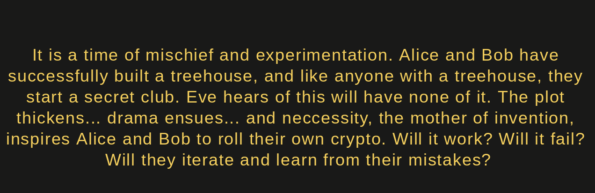
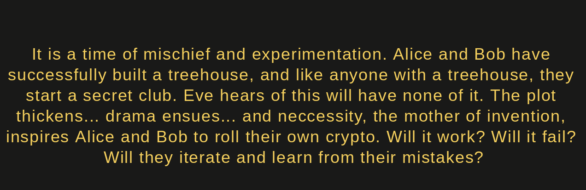

An Inconvenient Truth
- this book is a WIP and as such is incomplete and inaccurate
- please refer to Rusty Cryptoeconomics for the time being
A New Club
Alice and Bob build a treehouse. Like anyone with a treehouse they started a secret club! Eve wants to unmask their passphrase though so they create an elaborate code to keep it secret.
Eve Strikes Back
Eve uses cryptanalysis to unscramble the messages and decrypt Alice and Bob's codes and passphrase. Everyone knows and the club is in shambles! What to do?!
Return of the Code
Thrwarted by Eve, Alice and Bob hunker down in the playground and come up with new ideas, and find new hope. Will they finally be able to create thier club? Will this become even more useful than they thought?! We will find out...

AKA Public/Private Key Crypto: What is it and why should you care?
Back in the day, for most of human history, if someone wanted to communicate securely they had to either be in the same place at the same time, or use a shared secret code to encrypt and decrypt messages. This was problematic because in order to agree on and share a secret code you had first meet in person, and then if you changed your mind or someone broke your code you'd have to meet up again to agree to a new scheme. Not practical in a 24/7 globally connected digital world. Fortunately for us, a few guys named Merkle, Diffie, and Hellman came up with some pretty cool ideas on how to securely share private data over public networks.
Coincidentally, our friends Alice and Bob are working through this right now...

Alice and Bob built a treeshouse. Like anyone with a treehouse, they started a secret club. Like every secret club, there needs to be a secret way to prove that you're part of the secret club. Normally there would just be a cool passphrase or knock that you would yell to have the rope thrown down, but... this means that anyone nearby could learn their secret code! This wouldn't be that big of a deal, but there's this chick named Eve who believes that the world should have no secrets, and especially no secret clubs. Why? We'll never know, but she's always watching... and whenever she learns anything she posts it on the school bulletin board for everyone to know. Now Timmy has a daily panic attack when people put bugs in his desk and Sarah has to wear ear plugs incase anyone utters a palindrome, and they often do. Needless to say, if everyone knew the clubs secret code it would be a disaster ¯\(ツ)/¯
What to do?
Alice and Bob come up with a plan... First they thought about using secret colors because that seems to be what everyone else is doing, but when they tried it everything just turned brown. This meant anyone could just mix all the colors together to produce brown without actually knowing Alice and Bob's secret colors! Not cool, and besides, who wants to live in a world where everything's brown? Requiring a practical solution, Alice and Bob press on, and on one dismal afternoon, while staring at the clock, waiting, for school, to be over... they get an idea! A big one! What if instead of using colors, they used numbers, but instead of using any random numbers, they used numbers that wrap around like a clock does?

How would this help Alice and Bob securely share the secret passphrase without Eve knowing?!
TODO: explain [primitive root modulo](https://en.wikipedia.org/wiki/Primitive_root_modulo_n) stuff linking 5 to 23
First, the club gets a number. After much consideration Alice and Bob decide that the number shall be 5, and 5 shall be the number. They tell everyone. 5 club is lit af. Everyone wants in, esp Eve...
Then, the club gets a secret passphrase. At first only Alice and Bob know it, but as well all know, 5 club is lit af so soon more people join. They all know the passphrase, but they can't say it out loud because Eve could be anywhere anytime, always watching... This is truly annoying.
To get around this unfortunate dilema, Alice and Bob create a number system where, like clocks, the numbers wrap around if you go past the maximum number. In this case we're using a 24hrs clock that wraps around after 23.
Also, everyone who's part of the club has a secret number. In fact, the club itself even has a secret number. These numbers are so secret that no one knows what they are or might be. They are truly random and unknown. They could be anything...
Everyone, including the club, also has a public number. These are kind of like an address and everyone knows what these are. How do we create these public numbers in a way that connects them to the private numbers? Well it's easy, just multiply the club's number by it's self (exponentiation) as many times as a person's secret number, but wrap around everytime they go past 23 (like on a clock). For example: if Jim's secret number is 4, then Jim would multiple the club's public number 4 times (5 * 5 * 5 * 5), but would wrap around everytime the value was higher than 23. The symbol for this is %, and the mathematical term is the modulo operation.
Try it out for yourself!
fn main() { let modulo = 23; let club_public_number = 5; let jim_secret_number = 4; // 4 // (b**p) % m // function to perform exponential modulo artithmetic // because rust doesn't perform modulo operations // inbetween the exponential multiplication like python does // and this leads to very large numbers that overflow fn exp_mod(b: i32, p: i32, m: i32) -> i32 { let mut out = (b * b) % m; //println!("0: {}", out); for i in 1..p-1 { //because the first iter of out took 2 off the base out = (out * b) % m; //println!("{}: {}", i, out); } out } // What's Jim's public number? let jim_public_number = exp_mod(club_public_number, jim_secret_number, modulo); println!("Jim's public number is: {}", jim_public_number); // let's check for other numbers that could have also created that same public number for i in 0..1000 { let alt_public_number = exp_mod(club_public_number, i, modulo); if alt_public_number == jim_secret_number { println!("alt secret number: {}", i); } } }
Now Jim has a public number (4), but no one knows what number was multiplied around the clock to get there. Could be 5**4, could be 5**26, could be 5**136, or many others...
Good for Jim, but how does this help Alice and Bob with their club?
Good question. The way to check that Jim is part of the club is to do a few things:
- Jim multiplies the club's public number times itself as many times as his secret number
- Whoever is in the club multiplies Jim's public number times itself as many times as the club secret number
- They then write each number down on a piece paper, fold the papers into airplanes, and throw them at each other. Now both Jim and the people in the club have a shared secret that no one else knows that they can use to scramble and unscramble the secret passphrase!
- Jim scrambles every letter in the passphrase forward by the shared secret number.
- Jim then proceeds to yell that new series of letters out loud.
- Whoever is in the club writes down those letters, then shifts them backwards by the amount of the shared secret number.
- If it reveals the passphrase, Jim is in!
- Also, even though Eve is creeping in the bushes nearby, everyone who yells a scrambled passphrase to get in yells a different one because it's scrambled based on their unique numbers!
- Eve tries again and again to yell random passphrases but it doesn't work. Horray!
Let's try it out!
// Notes // - You can push the triangular shaped play button in the top right of this frame to run the code as is. // - You can also edit this code however you want! It's a live Rust Playground so change stuff, experiment, and just push the triangle when you're ready to see what happens. Hint: you can change the player's secret numbers to any numbers and it should all still work. Beyond that though, you're on your own. Boldly go where you have not gone before! :) fn main() { // Club Parameters let passphrase_as_string = "thepasswordispassword"; let passphrase = vec!["t", "h", "e", "p", "a", "s", "s", "w", "o", "r", "d", "i", "s", "p", "a", "s", "s", "w", "o", "r", "d"]; let passphrase_test = vec!["t", "h", "e", "p", "a", "s", "s", "w", "o", "r", "d", "i", "s", "p", "a", "s", "s", "w", "o", "r", "d"]; let modulo = 23; let club_base_number = 5; // (b**p) % m // b = base, p = private, m = modulo fn exp_mod(b: i32, pk: i32, m: i32) -> i32 { // b = base // pk = private key // m = modulo let mut out = (b * b) % m; //println!("0: {}", out); for i in 1..pk-1 { //because the first iter of out took 2 off the base out = (out * b) % m; //println!("{}: {}", i, out); } out } // Jim's Numbers let jim_secret_number = 4; let jim_public_number = exp_mod(club_base_number, jim_secret_number, modulo); // 4 // The Club's Numbers let club_secret_number = 98; let club_public_number = exp_mod(club_base_number, club_secret_number, modulo); // 9 // Let's create a secret key between Jim and The Club let jim_auth_number = exp_mod(club_public_number, jim_secret_number, modulo); // 6 let club_jim_auth_number = exp_mod(jim_public_number, club_secret_number, modulo); // 6 assert_eq!(jim_auth_number, club_jim_auth_number); // Now let's scramble the passphrase in a way that only the people in the club can unscramble! fn scramble(p: Vec<&str>, k: i32) -> (String, Vec<&str>) { // p = passphrase // k = key let a = vec!["a", "b", "c", "d", "e", "f", "g", "h", "i", "j", "k", "l", "m", "n", "o", "p", "q", "r", "s", "t", "u", "v", "w", "x", "y", "z"]; let key = k as usize; let mut scrambled_vec = Vec::new(); for i in p { for j in 0..a.len() { if i == a[j] { let alpha_index = j; let scrambled_letter = (alpha_index + key) % 26; scrambled_vec.push(a[scrambled_letter]) } } } let mut scrambled_str = String::new(); let sc = scrambled_vec.clone(); for i in sc { scrambled_str.push_str(i); } (scrambled_str, scrambled_vec) } let (scrambled_passphrase_str, scrambled_passphrase_vec) = scramble(passphrase, jim_auth_number); // Eve is always watching... //let evesdropped_scrambled_passphrase = scrambled_passphrase_vec.clone(); // rust type `std::vec::Vec<&str>`, which does not implement the `Copy` trait let mut evesdropped_scrambled_passphrase = Vec::new(); for i in scrambled_passphrase_vec.clone() { evesdropped_scrambled_passphrase.push(i); } // But can the Secret Club unscramble the passphrase? fn unscramble(p: Vec<&str>, k: i32) -> (String, Vec<&str>) { // p = passphrase // k = key let a = vec!["a", "b", "c", "d", "e", "f", "g", "h", "i", "j", "k", "l", "m", "n", "o", "p", "q", "r", "s", "t", "u", "v", "w", "x", "y", "z"]; let key = k as usize; let mut unscrambled_vec = Vec::new(); for i in p { for j in 0..a.len() { if i == a[j] { let alpha_index = j; let unscrambled_letter = (26 + alpha_index - key) % 26; unscrambled_vec.push(a[unscrambled_letter]) } } } let mut unscrambled_str = String::new(); let usc = unscrambled_vec.clone(); for i in usc { unscrambled_str.push_str(i); } (unscrambled_str, unscrambled_vec) } let (unscrambled_passphrase_str, unscrambled_passphrase_vec) = unscramble(scrambled_passphrase_vec, club_jim_auth_number); // Did it work? assert_eq!(unscrambled_passphrase_vec, passphrase_test); println!("original passphrase: {:?}", passphrase_as_string); println!("scrambled passphrase: {:?}", scrambled_passphrase_str); println!("unscrambled passphrase: {:?}", unscrambled_passphrase_str); }
Now you're probably wondering: "Isn't that a bit convoluted? I mean they could just have a list of people's names and then look out the window and see if that person is the person on the list!" They could, but what about on Halloween when everyone's wearing costumes, or at night when it's dark, or during they day when they're bored? These are the questions that keep me up at night, and apparently Alice and Bob feel the same way. Now they can have their secret club with secret numbers and all Eve knows is that whenever she tries to guess the passphrase by saying random numbers it doesn't work. Yay!

Everyone celebrates and lives happily ever after, or do they... While Alice and Bob are celebrating their new club, Eve is hard at work learning the dark art of cryptanalysis. What will she learn? How will she use it?
Find out in part 2: Eve Strikes Back!
Recommend Research Resources
- Wikipedia: modulo operation
- Wikipedia: diffie hellman
- Computerphile: diffie hellman with colors
- Computerphile: diffie hellman with modulo operations
- The Rust Playground
Rust code that follows along with the diffie hellman wikipedia article. Feel free to edit and play around with it here, or copypasta into the Rust Playground
// TODO: add an explanation for primitive Root Modulo Stuff // - the base is a primitive root modulo // - this is not explained, thus this is not an end-to-end tutorial // - how do we explain this simply? fn main() { // Alice and Bob's Agreed Upon Parameters let base = 5; let modulus = 23; // Alice and Bob's Private Keys let a_private = 4; let b_private = 3; // Function to perform exponential modulo artithmetic // because rust makes exponential multiplication with // i32 a real bother // (b**p) % m fn exp_mod(b: i32, p: i32, m: i32) -> i32 { let mut out = (b * b) % m; //println!("0: {}", out); for i in 1..p-1 { //because the first iter of out took 2 off the base out = (out * b) % m; //println!("{}: {}", i, out); } out } // Alice and Bob's Public Keys let a_public = exp_mod(base, a_private, modulus); let b_public = exp_mod(base, b_private, modulus); // Let's Check To See If It Worked! let to_a_from_b = exp_mod(b_public, a_private, modulus); let to_b_from_a = exp_mod(a_public, b_private, modulus); assert_eq!(to_a_from_b, to_b_from_a); //println!("to_a_from_b: {}", to_a_from_b); //println!("to_b_from_a: {}", to_b_from_a); }
TODOS
- Explain primitive root modulo stuff linking 5 to 23
- Incorporate the Secrecy Chart explanation from the wikipedia article (and the actual chart) into the storyline to further clarify why this theoretically works as well as to create a more analytical reference point when we want to break and then strengthen/extend it with stronger primes.
- Once the story line is solidified and all the concepts are in place, THEN clean up the spaghetti code and add comments that bridge the storyline (english) to the working example (code).
UX TODOS
- It would be great to incorporate the concept of public keys as addresses that people can send mail to, but only the person who owns the address (controls the key) can open the mailbox. (good because addresses for houses/mailbox and keys to access said houses/mailboxes are concepts people already understand.)
- Would it be good to recreate the "Math-y Explanation" using arbitrary variables to get the general concept down, and then apply it to Jim, and then apply that to A&B?
- Is it confusing that Jim's public number is the same as his private number, even though the modulo stuff is explained and demonstrated?
- Make sure that there are no trailing references to the Club Public Number when it should be the Club Base Number which is 5.
- To minimize vocabulary juggling and manitain relevance in the context of public private key crypto, search and replace:
- number => key
- secret => private
- Would it be easier for people to read/engage with the code if we used strings and chars instead of Vecs? (the passphrases would be easier to work with and it would work better for APIs or CLI applications, but the functions would be convoluted af) (a little verbose, but maybe we could use strings and make the functions convert the strings to Vecs and back again within the function?)

Overall Theme / Main Takeaway
- don't roll your own crypto like Alice and Bob did üëç
Concepts To Cover
- explain how it is NOT ideal for multiple private keys to correlate to the same public key (collision!) and show ways that Eve can exploit this! Then lead into how Alice and Bob might remedy that situation with larger primes and a better scrambling funciton.
- man in the middle attacks => spoofing, rerouting, or crypanalysis of scrambled messages
- rate limiting to prevent online brute force attacks (does not prevent captured messages via MIM attacks and offline hash cracking via rainbow tables or hashcat)
- randomness (Alice and Bob use the same keys every time, so Eve can perform cryptanalysis)
- things that are hard to guess for humans vs computers (demo a brute force cracking attack) (stretch goal: a social engineered cracking attack based on Alice and Bob's favorite things)
- social engineering via publicly available security questions
- Hash Collisions: yet another way Eve can pretend to be someone else and mess with A&B's club
Concepts To Hint At
- (2/3) Content Addressing: digital files be easily tampered with... so how do we sign things digitally while preserving all the characteristics that make a signature a signature? Content addressing! (not sure if this is relevant yet as Alice and Bob aren't using software yet, but maybe hint at it here and then have A&B impliment it in part3?) (would it be accurate/relevant to also say that using a compiled language like Rust allows for you to verify the authenticity/security of code before running it, whereas JS and Python run in real time and thus can call weird things on the fly?)
- (intro/all) Goals Of Cryptography:
- Integrity: The message I send will arrive at its intended destination intact and unchanged.
- Authenticity: I can ascertain that the sender and the recipient of the message are the correct ones.
- Non-repudiation: An event that has taken place cannot be denied.
- Confidentiality: That which is intended to be private will be kept private.
- (2/3) Trapdoors: Functions that are easy to compute but difficult to invert are called one way functions. A subset of one way functions are trapdoor functions - the only difference being that trapdoor functions can be inverted as long as you have some special secret k. (What if we had Eve pretend to help A&B, but really she was offering them tricky software that her friend Mal created that has a trapdoor in it?)
- (3) Cryptographic hash function:
- Collision resistant: Given two inputs a and b, it is computationally expensive to find H(a) = H(b)
- Preimage resistant: Given only the output of H(a), it is computationally infeasible to find a. Brute forcing (guessing every possible input) should be the only way to find it, which is expensive
- Second-preimage resistant: Given a, one cannot find b such that H(a) = H(b).
- (3) Hashes As Commitments: how can this example be incorporated into the story?
- A writer who wants to copyright their manuscript on a certain date can publish a hash of their manuscript to the blockchain, where it gets timestamped. Should there be any dispute over the manuscript in the future, it would be very easy to verify whether the manuscript was hashed and signed on a certain day. It is also important to note that simply changing one letter in the manuscript, or even one bit in the input, should change a large portion of the bits in the output. Hash functions are mainly used for securing the integrity of information and thus also can act as unique identifiers. Since hash functions are deterministic, they are able to prove that certain pieces of information have not been tampered with. If information is tampered with, it will produce a different hash to the original version.
- (2/3) Lamport Signatures: further emphasizes the concept of public keys as addresses and private keys as access, but furthers it by using it to prove things more like an account can post stuff on apps and social networks.
- For Person A to sign a document, a hash value is produced from that document using a hash function. Person A uses the encryption key, which is kept hidden, to encrypt the hash value of the document to produce a cipher-text: E(H). For Digital Signing Algorithms (DSA), the encryption key is the private key that is kept a secret and the decryption key is the public key that is published into the open. Person A publishes the document and along with the E(H). Anyone can verify that person A has signed the document by hashing the document and then using Person A’s trusted and published decryption key to decrypt the cipher-text E(H) to produce the same hash of the document. If the document hashes match, then the signature is valid.
- It would be really great to create a code example for this because as is it's a solid example, but a little handwavey on the details. "You can think of the decryption of the right hash as the signature itself. The successful decryption is proof it is never exposed but rather the key used for encryption. The uniquely transformed cipher-text is proof of signature." <= like wtf does that even mean? An example would clarify it immensely :)
Story Arc
Keep your friends close and your enemies closer.
P1) A Blessing In Disguise...
- Eve learns the dark arts of cryptanalysis and social engineering (HOW? She was traveling and one of her bags was lost for months. She needed to get back into her accounts but had no way to access the passwords and codes that were securely stored in her checked bag. Desperate, she tried everything and, with the help of her friend Mal, learned how to break into her own accounts. Thinking it through, she wondered if the same tactics could help her infultrate Alice and Bob's now super popular club?). Meanwhile Alice and Bob are enjoying their club so much that they get tired of doing all the work of checking and doing the protocol they implimented. Since Eve hasn't attacked in a while anyways, they oursource verification to Alice's little brother in exchange for a chocolate bar every other friday. Alice's mom is a strict vegan health nut so this is a big deal for her little brother.
P2) The Final Attack!
- Eve completely pwns Alice and Bob in various ways: first intercepting messages and using brute force attacks and cryptanalysis to uncover the secret messages (Alice's little brother was only told to follow the protocol, so Eve can just hangout and try guess after guess with no penalties lol), then by sending false information between club memeber to create drama and upset, and then by bribing Alice's little brother with a Snickers bar to give her access to the secret master keys.
{kind=link}
P3) Free At Last?
- Alice and Bob are forced to abandon the treehouse because it becomes untenable and overrun with field trips from CS schools warning students of the perrils of rolling your own crypto. They've think they've lost everything, but they still have each other.
Beginnings of code building on previous concepts in part 1, and expanding to impliment Eve's various attacks :)
// PART 2: Eve Strikes Back! // TODOS // it would be great to include a framework for people // to try being Eve and attempting random values and see // if they work or not // // then create a game (with larger primes) where the secret // numbers are chosen randomly you have to prove that you // know the secret number to get into the club (thus // showing how it's easy to prove if you're in the club // but much harder to break if you're not in the club) // // then link to a real dh library in rust that explains // how to use it in practice and provides secure code fn main() { // USEFUL FUNCTIONS // (b**p) % m // b = base, p = private, m = modulo fn exp_mod(b: i32, pk: i32, m: i32) -> i32 { // b = base // pk = private key // m = modulo let mut out = (b * b) % m; //println!("0: {}", out); for i in 1..pk-1 { //because the first iter of out took 2 off the base out = (out * b) % m; //println!("{}: {}", i, out); } out } // scrambles a vector of strings based on an input key fn scramble(p: Vec<&str>, k: i32) -> (String, Vec<&str>) { // p = passphrase // k = key let a = vec!["a", "b", "c", "d", "e", "f", "g", "h", "i", "j", "k", "l", "m", "n", "o", "p", "q", "r", "s", "t", "u", "v", "w", "x", "y", "z"]; let key = k as usize; let mut scrambled_vec = Vec::new(); for i in p { for j in 0..a.len() { if i == a[j] { let alpha_index = j; let scrambled_letter = (alpha_index + key) % 26; scrambled_vec.push(a[scrambled_letter]) } } } let mut scrambled_str = String::new(); let sc = scrambled_vec.clone(); for i in sc { scrambled_str.push_str(i); } (scrambled_str, scrambled_vec) } // undoes the effect of the scramble() function fn unscramble(p: Vec<&str>, k: i32) -> (String, Vec<&str>) { // p = passphrase // k = key let a = vec!["a", "b", "c", "d", "e", "f", "g", "h", "i", "j", "k", "l", "m", "n", "o", "p", "q", "r", "s", "t", "u", "v", "w", "x", "y", "z"]; let key = k as usize; let mut unscrambled_vec = Vec::new(); for i in p { for j in 0..a.len() { if i == a[j] { let alpha_index = j; let unscrambled_letter = (26 + alpha_index - key) % 26; unscrambled_vec.push(a[unscrambled_letter]) } } } let mut unscrambled_str = String::new(); let usc = unscrambled_vec.clone(); for i in usc { unscrambled_str.push_str(i); } (unscrambled_str, unscrambled_vec) } // DATA // Club Parameters let passphrase = vec!["t", "h", "e", "p", "a", "s", "s", "w", "o", "r", "d", "i", "s", "p", "a", "s", "s", "w", "o", "r", "d"]; let passphrase_test = vec!["t", "h", "e", "p", "a", "s", "s", "w", "o", "r", "d", "i", "s", "p", "a", "s", "s", "w", "o", "r", "d"]; let modulo = 23; let club_base_number = 5; // Jim's Numbers let jim_secret_number = 4; let jim_public_number = exp_mod(club_base_number, jim_secret_number, modulo); // 4 // The Club's Numbers let club_secret_number = 98; let club_public_number = exp_mod(club_base_number, club_secret_number, modulo); // 9 // Let's create a secret key between Jim and The Club let jim_auth_number = exp_mod(club_public_number, jim_secret_number, modulo); // 6 let club_jim_auth_number = exp_mod(jim_public_number, club_secret_number, modulo); // 6 assert_eq!(jim_auth_number, club_jim_auth_number); // Jim's message let (scrambled_passphrase_str, scrambled_passphrase_vec) = scramble(passphrase, jim_auth_number); // Eve is always watching... //let evesdropped_scrambled_passphrase = scrambled_passphrase_vec.clone(); // rust type `std::vec::Vec<&str>`, which does not implement the `Copy` trait let mut evesdropped_scrambled_passphrase = Vec::new(); for i in scrambled_passphrase_vec.clone() { evesdropped_scrambled_passphrase.push(i); } println!("Evesdropped scrambled passphrase: {:?}", evesdropped_scrambled_passphrase); // Jim again let (unscrambled_passphrase_str, unscrambled_passphrase_vec) = unscramble(scrambled_passphrase_vec, club_jim_auth_number); // Did it work? assert_eq!(unscrambled_passphrase_vec, passphrase_test); println!("original passphrase: {:?}", passphrase_test); println!("scrambled passphrase: {:?}", scrambled_passphrase_str); println!("unscrambled passphrase: {:?}", unscrambled_passphrase_str); // But wait! // What if Eve hears someone saying a scrambled passphrase // and then tries to use someone else's public key to unscramble it? // Or what it Eve tries to pretend she's someone else using their public key? let eve_public_number = jim_public_number.clone(); // 4 // But wait... Even with Jim's Public Key, how many times does Eve need to // multiply the Club Number by itself to find the secret key shared between Jim and The Club? //let eve_secret_number = "?"; //let eve_auth_number = exp_mod(club_public_number, eve_secret_number, modulo); // Looks like Eve will have to guess for i in 0..23 { let eve_secret_number = i; let eve_auth_number = exp_mod(club_public_number, eve_secret_number, modulo); let (eve_unscrambled_passphrase_str, eve_unscrambled_passphrase_vec) = unscramble(evesdropped_scrambled_passphrase.clone(), eve_auth_number); if eve_unscrambled_passphrase_vec == passphrase_test { println!("Eve broke the code!"); println!("Secret Passphrase: {:?}", eve_unscrambled_passphrase_str); println!("Secret Key: {:?}", eve_auth_number); } } // Looks like Eve is going to have to resort to social engineering to trick // the club bouncer into thinking that her made up public key is legit let eve_private_number = 45; let eve_public_number = exp_mod(club_base_number, eve_private_number, modulo); // 5 let club_eve_auth_number = exp_mod(eve_public_number, club_secret_number, modulo); // 9 }
Resources & Research
Most ideas taken from here and applied to a storyline:
- https://github.com/cryptoeconomics-study/website/blob/master/book/chapter-01.md
Cryptographic Hash Functions
- wiki: https://en.wikipedia.org/wiki/Cryptographic_hash_function
Overall Theme / Main Takeaway
- learn from best practices and use established and audited protocols and libraries when dealing with sensitive and valuable data.
Concepts To Cover
- the difference between psuedo random and cryptographically random numbers
- the avalanche effect in hash functions
- verifiable content addressing via hashes
- rate limiting to prevent brute force attacks
- true randomness by rolling dice or augmenting the passphrase
- length > complexity and computation time in big O notation => show why using larger primes is essential as well as how to determine the theoretic/computational security guarantees of a protocol (but how large of computations can the Rust Playground or mdBook handle?)
- 2FA > security questions (or randomized answers to security questions)
- digital signatures: for content addressing/verification as well as 1 way hash functions
- it would be cool to actually have a gif/video of an avalanche to emphasize that while you know something happened, you can't which piece of snow on the ground came from which place on the mountain because it's all jumbled up (and would be uniquely for every new avalanche)
Story Arc
Alice and Bob strike back!
P1) Learning The Hard Way
- Alice and Bob explore best practices in crypto such as: don't roll your own crypto, use audited code and protocols, don't reuse passphrases or keys, don't let other people hold/control your keys, don't use a centralized processor to manage security or data access.
P2) Sweet Revenge
- They use Alice's little brother as a honeypot to catch Eve red handed manipulating the old codes
P3) Survival Of The Fittest
- They impliment a newer better protocol impressing all the CS professors who used to laugh at them, and Eve is banned from learning any more trickery in the computer lab. (might be better if she was permanently vanquished or converted to an ally than just being censored?)

Production Ready Libraries
Rust Crypto
- https://github.com/RustCrypto
Web Cryptography API (javascript)
- https://www.w3.org/TR/WebCryptoAPI/
- https://developer.mozilla.org/en-US/docs/Web/API/Web_Crypto_API
General Resources
Awesome Cryptography
- https://github.com/sobolevn/awesome-cryptography#readme
Awesome Cryptoeconomics L4
- https://github.com/L4ventures/awesome-cryptoeconomics
Awesome Cryptoeconomics jpantunes
- https://github.com/jpantunes/awesome-cryptoeconomics
Glossary
A catchall for concepts and resources related to crypto, economics, and cryptoeconomics.
search #! for open questions/problems
In addition to abstract definitions, it would be great to add:
- examples and common usecases for each thing
- reference links to dive deeper
Computer Science
- state
- nodes
- graphs
- randomness/entropy
- psuedo anonymity and data correlation
- privacy vs anonymity
- etc…
Ledger:
A record of information.
State:
A snapshot of a ledger at a particular moment in time.
Distributed Ledger:
A ledger that is distributed amongst multiple parties who agree on it's state.
State transition:
A function that takes the state then transforms it into another state.
Consensus:
The act of reaching agreement between parties.
Game Theory:
- equilibrium
- Nash equilibrium
- perto optimal
- prisoners dilemma
- iterated v finite games
Crypto
- verification: hashes, merkle trees, commitment schemes
- security: digital signatures (pub/private key encryption)
Cryptography:
Deals with making communications secure and verifiable.
Cryptoanalysis:
Deals with breaking ciphertext, that is, recovering plaintext without knowing the key.
Cryptology:
A branch of mathematics which deals with both cryptography and cryptoanalysis.
Hashes
- Hashes allow us to fingerprint some information with a short name. Anyone can take the hash of some file and save it. You can then use this hash to prove to others that you (a) have seen the file before (b) no one has tampered with the file.
- a secure hash has several properties: avalanche effect, preimage resistance, etc...
For example, the Bitcoin whitepaper has a certain hash. A while ago the Bitcoin Core foundation wanted to change the official URL of the whitepaper. They wanted it to point to an “improved” version of this whitepaper that Satoshi wrote. Since they control the bitcoin.org URL they can do this. A long time ago someone with foresight saved the hash of this whitepaper in the Blockchain. This means it’s very easy to see if someone well-intentional changes the original file.ered with the file.
Preimage:
the input to the hash function
A is a preimage of B if B = hash(A)
Digest/Hash:
the output of the hash function
Preimage Resistance:
it is computationally infeasible to find the input to a hash funciton given it's output.
Collision Resistance:
a hash funciton produces a unique output for every unique input. A "collision" would be if H(a) = H(b).
Encryption:
The process of turning a clear-text message (often called Plaintext) into a data stream which looks like a meaningless and random sequence of bits (called ciphertext). The process of turning ciphertext back into plaintext is called decryption.
Symmetric Key Encryption:
Use the same key for encryption and decryption. These algorithms require that both the sender and receiver agree on a key before they can exchange messages securely.
Public-key algorithms (also known as asymmetric algorithms):
Use two different keys (a key pair) for encryption and decryption. The keys in a key pair are mathematically related, but it is computationally infeasible to deduce one key from the other. These algorithms are called “public-key” because the encryption key can be made public. Anyone can use the public key to encrypt a message, but only the owner of the corresponding private key can decrypt it.
Public Key:
these can be public facing and are often like an address that anyone can send information to.
Private Key:
every public address has a unique private key. Whoever controls the private key controls the address. While anyone can send data to the public key, only the private key can autorize data to be sent out from the address. This means that you can prove to others that you wrote a certain message. For example, that you authorized a transaction, voted, or posted some content at a certain time before anyone else.
Commitment Scheme
a cryptographic primitive that allows one to commit to a chosen value (or chosen statement) while keeping it hidden to others, with the ability to reveal the committed value later.[1] Commitment schemes are designed so that a party cannot change the value or statement after they have committed to it: that is, commitment schemes are binding. Commitment schemes have important applications in a number of cryptographic protocolsincluding secure coin flipping, zero-knowledge proofs, and secure computation.
A way to visualize a commitment scheme is to think of a sender as putting a message in a locked box, and giving the box to a receiver. The message in the box is hidden from the receiver, who cannot open the lock themselves. Since the receiver has the box, the message inside cannot be changed—merely revealed if the sender chooses to give them the key at some later time.
Interactions in a commitment scheme take place in two phases:
- the commit phase during which a value is chosen and specified
- the reveal phase during which the value is revealed and checked
Economics:
- incentives (rewards/punishments, slashing, block rewards, etc…)
- types of value (financial rewards, reputation, voting power, privilege => the right to make a certain decision)
Bitcoin Example:
In Bitcoin, when a miner finds a block they get a direct reward of some Bitcoin. More generally we can call this a token reward. The miner also has the privilege to decide which transactions to include in that block, and they generally choose transactions with the highest fees attached.
PoS Example:
In proof of stake nodes put down a security deposit, but if they behave badly this deposit gets taken away.
Blockchain Specific Stuff
- checkpoint
- epoch
- finality
- fork choice rule
- proof of work
- proof of stake
Checkpoint (Ethereum):
the last block under consideration for finality for a given epoch.
Epoch (Ethereum):
a length of time measured in blocks. As of today's specs, an epoch is 100 blocks and spans between two checkpoints.
Finality:
The point at which a block has been decided upon by a client to never revert. In PoW rather there is no finality, only deeper block confirmations.
Fork choice rule:
the rules for traversing a dag in order to find the canonical chain.
Epoch (Ethereum):
a length of time measured in blocks. As of today’s specs, an epoch is 100 blocks and spans between two checkpoints.
Finality:
The point at which a block has been decided upon by a client to never revert. In PoW rather there is no finality, only deeper block confirmations.
Centralized nodes:
One node controls the network. Fault tolerance is low.
Distributed nodes:
Decentralized nodes:
Decentralized Consensus: Consensus arrived from many parties
Nonce:
Central Operator:
Censorship Resistance:
Reorganization/Reorg:
Blocks:
Groups of transactions and other their associated meta data that are cryptographically signed and appended to a chain of such blocks.
Minners/validators:
Decides on the order of transaction by voting for it through different cryptographic protocols such proof of work or proof of stake.
Selfish mining:
The act of mining blocks ahead of the network without broadcasting the blocks.
Porous Boundaries:
Protocols where the users of the protocol can become miners and validators.
Rigid Boundaries:
Protocols where users of the protocol can NOT become validators/minners
Checkpoint (Ethereum):
the last block under consideration for finality for a given epoch.
Rate limiting:
Verifiable delay functions:
Randomness beacon:
A source of randomness that is cryptographically secure. #! HOW? offchain oracle services via quantum measurements, radioactive decay, or lavalamps?
Burning:
The act of destroying a crypto (often by sending to an irretrievable address). Assuming demand stays the same, this reduces supply and thus increases the value per token.
Meta: combining tools to make secure cryptoeconomic mechanisms
- protocol level security (aligning incentives to ideally make the perto optimal outcome also the dominant strategy with no incentive to deviate (Nash)): PoW, PoS
- incentives in iterative games vs finite games with reputation and compounding value
- where we need security vs where it’s nice to have (esp relevant for plasma chains where only account balances/tokens need to be stored on the parent chain)
- voting (QV, correlated slashing, commit/reveal schemes)
- attacks and defenses
Blockchain: a merklized linked list of blocks where each new block commits a group of transactions/data to the previous one via a hash function, forming a chain of blocks. In order to commit a group of transactions/data, you need to solve a very very complicated puzzle. If one were to try to retroactively change the data in a previous block, you would need quite a bit of compute power to solve all the puzzles between the current block and the block being changed. Considering that all the computers mining blocks (solving puzzles and committing information) on the bitcoin blockchain vastly surpass the compute power of all the world's supercomputers combined... this seems unlikely. Not impossible, but unlikely.
- hashes verify the data's authenticity
- public/private key crypto secures your account
- economic incentives reward people for solving puzzles to secure the network and commit data
#! this needs to be expanded
Other Stuff:
- convergence (of blocks, towards a shared truth)
- validity (ensure you have the funds and you signed transaction)
- data availability (you can inspect full historical data)
- non-censorship (if you pay a fee your transaction gets included)
- P+epsilon attacks (taking over a network by bribing participants and paying $1)
- Vickrey auctions (efficient price allocation with private information)
- Fault attribution (punishing bad behavior when you don’t know exactly what happened)
- Dominant assurance contracts (making public goods financing a self-interest)
- Cryptoeconomic security margin (how much do you have to pay to take over a network)
#! Add bitcoin as a cannonical example of cryptoeconomics in action? (https://discuss.status.im/t/cryptoeconomics-what-is-it-about-and-why-should-you-care/78)
Discouragement attack:
an attack where an adversary burns resources to decrease payoff for others in the network.
Fork choice rule:
the rules for traversing a dag in order to find the canonical chain.
PoW (Proof of Work):
a consensus mechanism where resources are burned to verify transactions.
PoS (Proof of Stake):
a consensus mechanism where validators stake a number of tokens proportional to their voting power in finalizing blocks.
#! update this to the latest version and find out what it's actually called PoS Consensus if a validator node commits an error, it gets penalized an amount proportional to the number of other nodes that have committed an error around the same time. This incentivizes nodes to set themselves up in such a way that their failure rate is maximally uncorrelated with everyone else’s failure rate, reducing the chance that many nodes fail at the same time and threaten to the blockchain’s integrity
Assurance Contract:
a system where some public good is funded by giving anyone the opportunity to pledge money, and only collecting the pledges if the total amount pledged exceeds some threshold.
Proof of stake conditional hashcash:
when you commit to something (like sending someone an email), you stake a small value along with that commitment and give the receiver the opportunity to burn that stake if they so choose (in this case if they view your message as spam).
Common Misconceptions
Onion hashing:
- Using the layers of hashing (ie finding the hash of a hash of a hash) to generate a source of randomness. #! This is only a secure form of randomness if the input to the original hash is a cryptographically secure form of entropy. Otherwise it's just psuedorandom because hash functions are deterministic. (mostly sure)
Small Game Fallacies
- https://unenumerated.blogspot.com/2015/05/small-game-fallacies.html When analyzing cryptoeconomics it's VERY important to think about opportunity costs OUTSIDE of the mechanism
- example: if I lock up $X staking ETH, the rate of return/interest has to be MORE than I could get from other investments, including those outside of the crypto world like bonds. This is important otherwise the only participation will be due to altruism, which is a weak strategy.